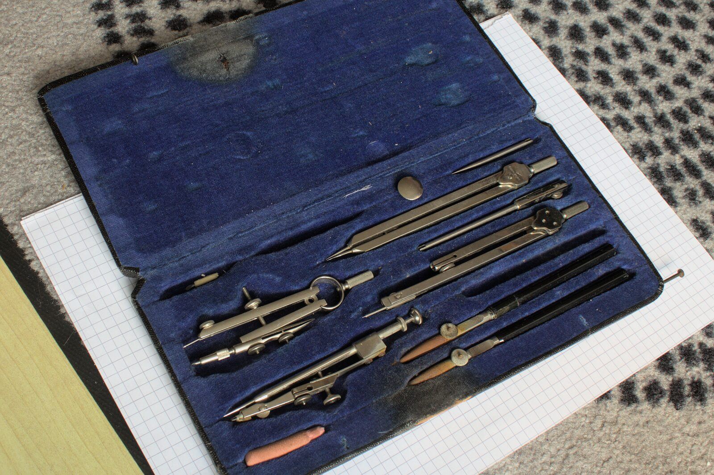

代表プロフィール

上原 光瑛杜工舎 代表 ／ 1級土木施工管理技士補
経歴・資格
経歴
- 2018年
- 埼玉大学 工学部 建設工学科 卒業
- 2018年
- 埼玉県庁 入庁（土木技術職）公園の整備、道路・河川の工事監督と維持管理、令和元年東日本台風の災害復旧に従事
- 2024年度
- 担当した地すべり復旧工事が 全建賞（災害枠・都市部門）を受賞（令和6年度）
- 2026年
- 埼玉県庁 退職（8年間勤務）
- 2026年
- 農業法人 入社（在籍中）
- 2026年
- 杜工舎 開業（さいたま市）
資格・講習
- 1級土木施工管理技士補1級土木施工管理技術検定 第一次検定 合格
- 準中型自動車免許5t限定
- 刈払機取扱作業者安全衛生教育 修了
- チェーンソーによる伐木等の業務特別教育 修了
1級土木施工管理技士の第二次検定、ビオトープ管理士2級（計画部門）、土壌医検定2級などの受験を続けています。現場の判断材料を増やすためで、資格そのものを売りにはしていません。
- 屋号
- 杜工舎（もりこうしゃ）
- 代表
- 上原 光瑛
- 資格
- 1級土木施工管理技士補
- info@morikosha.com
- 所在地
- 埼玉県さいたま市大宮区高鼻町３丁目
2018年3月に埼玉大学工学部建設工学科を卒業し、同年4月から8年間、埼玉県庁の土木技術職として、道路・河川・斜面・公園といった社会インフラの工事監督と維持管理、災害復旧に携わりました。
仕事は、設計の照査から積算、入札後の現場監督、完成検査まで。担当した工事のひとつに、令和元年東日本台風で崩れた斜面の地すべり復旧があります。現場の担当として工事を進め、この工事は令和6年度 全建賞（災害枠・都市部門）に選ばれました。発注する側に8年いたので、工事がどう進み、書類とお金のどこで手が止まるかを、体で知っています。
2026年3月に県庁を退職し、いまは農業法人に籍を置いて畑に出ています。建設の現場でも、農業の現場でも、同じ言葉を聞きました。「人が来ない」「いい仕事をしているのに、外から見えない」。仕事の中身は確かなのに、それを外から確かめる手立てがない ── 足りないのは腕ではなく、伝わる形だと考えるようになりました。
杜工舎をはじめた想い
県庁で8年間、工事を発注し、監督する側にいました。現場で顔を合わせた会社の多くが、若い人が入ってこないという同じ悩みを抱えていました。
いま籍を置いている農業も、造園の現場も同じです。人手が足りない。募集をかけても来ない。その現実を、身近で感じています。
仕事や商品・サービスを探している人に届く入口をつくり、社会に喜びが増えることを目指して杜工舎を開業しました。
仕事の進め方
事実だけを載せます
御社からいただいた情報と、公表されている資料だけで組みます。埋まらない項目は、想像で埋めずに載せません。
分かることと、分からないことを分けます
「必ず」「保証します」とは書きません。数字を出すときは、出どころと時点をそばに書きます。
相手の言葉で書きます
専門用語を並べず、やることの順番で書きます。読む人は、その業界の外にいる人だからです。
値引き、紹介料、補助金を前提にしたご提案はしていません。価格は誰に対しても同じです。
いま、つくっているもの
覚える
資格試験の出題を整理した、練習用のアプリをつくっています。
準備中見通す
地図と気象・市場のデータから、これからの傾向を見る画面をつくっています。
準備中